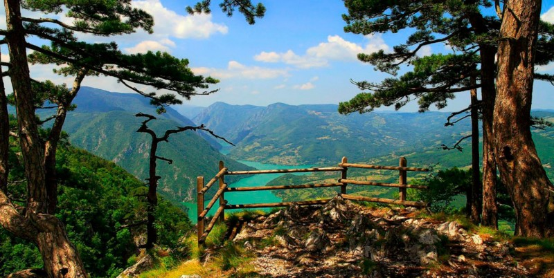
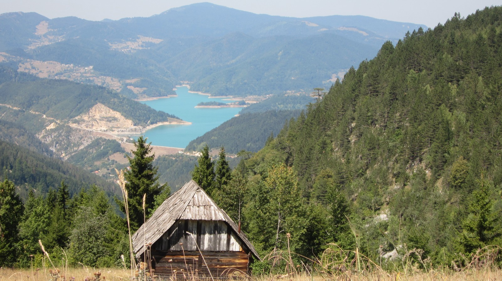
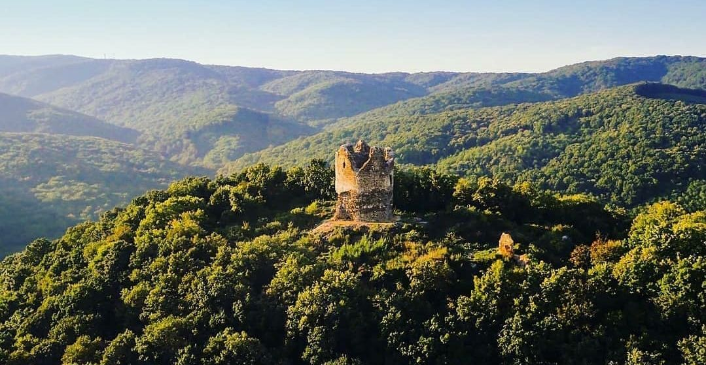
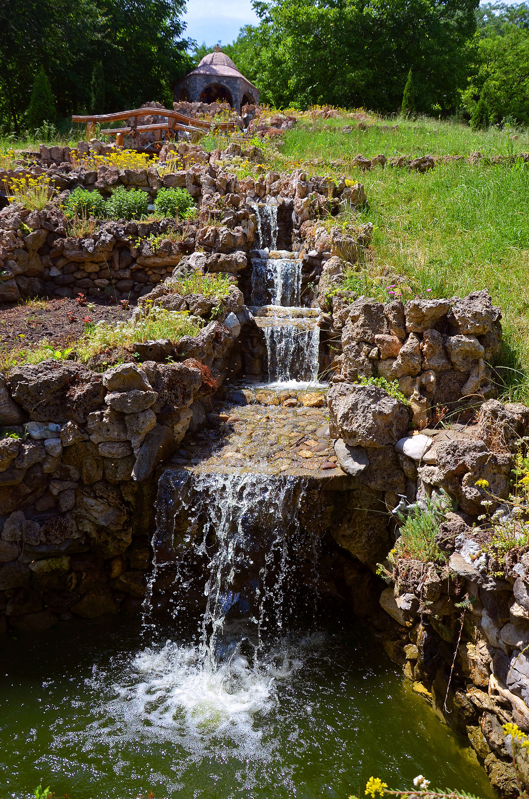
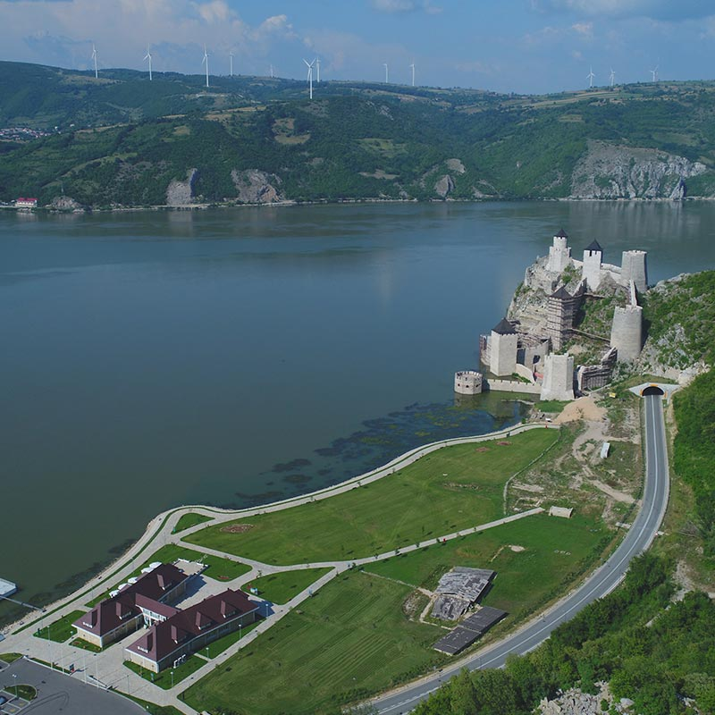
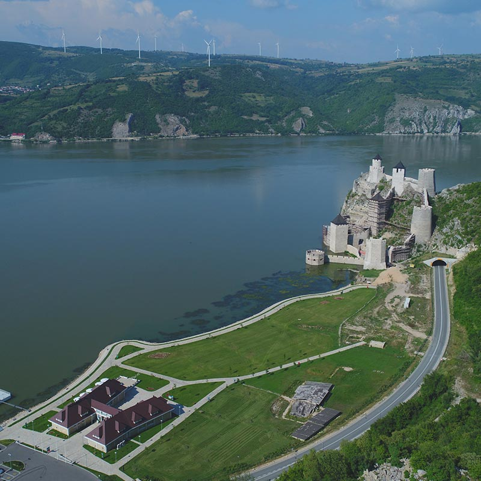

Наше понуде
Тара
Планина Тара, смештена у западном делу Србије, део је Тарског националног парка и једна је од најлепших планинских области у земљи. Позната је по својим нетакнутим шумама, бујној флори и фауни, као и спектакуларним погледима на реку Дрину. На Тари се налази и Манастир Раче, важан историјски и културни споменик. Ова планина је идеално место за љубитеље природе, планинаре и све који желе да уживају у мирном окружењу.
 
Фрушка гора
Фрушка гора је планина која се налази у северном делу Србије, у близини Новог Сада. Позната је по својој богатој флори и фауни, као и великим виноградима који производе нека од најбољих српских вина. Ова планина је такође дом бројним манастирима, од којих су неки од најзначајнијих Манастир Крушедол и Манастир Врдник. Фрушка гора је идеално место за пешачење, планинарење и уживање у природи, са бројним стазама и погледима на панонску равницу. Национални парк Фрушка гора привлачи туристе из целог света који желе да се опусте и уживају у њеним лепотама. Ова планина је не само природно, већ и културно благо Србије.
 
Голубачка тврђава
Голубачка тврђава је историјска тврђава која се налази на десној обали Дунава, у близини града Голупца, на граници Србије и Румуније. Тврђава датира из 14. века, а њен стратешки положај на реци омогућавао је контролу над пловидбом и трговином на Дунаву. Током своје историје, Голубачка тврђава је била под влашћу различитих народа, укључујући Србе, Мађаре, Турке и Хабсбуржане. Данас је обновљена и отворена за туристе, нудећи спектакуларан поглед на околни крајолик и реку Дунав. Тврђава је део културног наслеђа Србије и популарна дестинација за љубитеље историје и природе.

 
